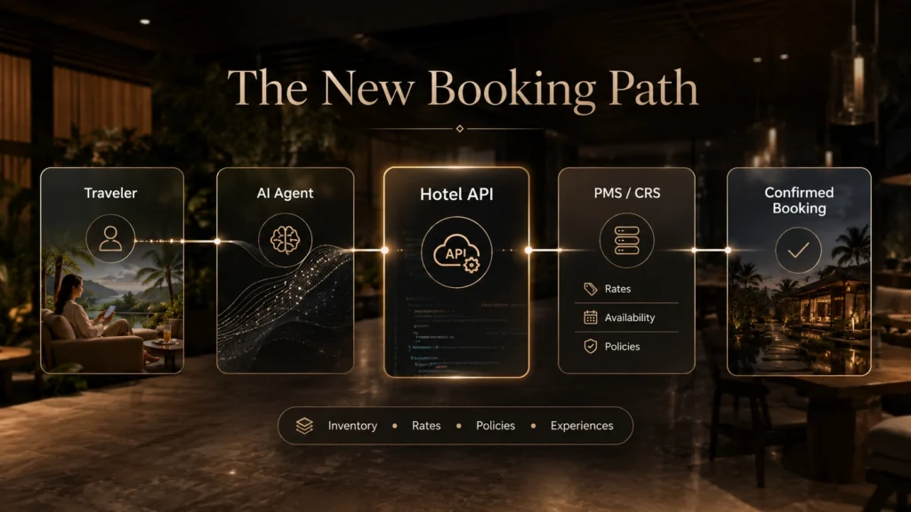
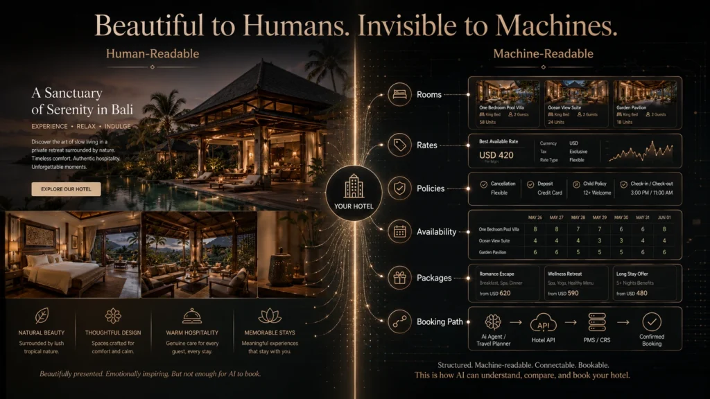
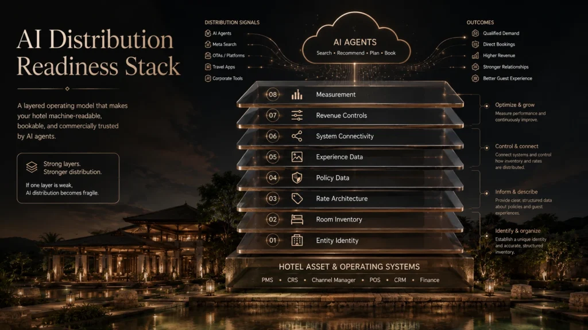
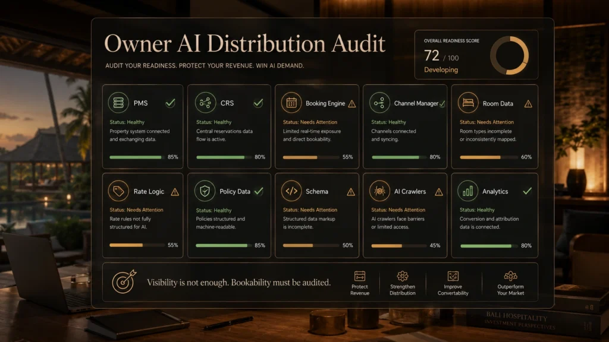

AI hotel distribution Bali is becoming an owner-side risk, not only a marketing topic. The next hotel distribution problem in Bali will not be caused by a weak Instagram page or an outdated brochure website. It will be caused by hotels that cannot be read, compared, priced, and booked by AI agents.
For years, hotels have treated distribution as a visible channel mix: OTAs, website, booking engine, Google profile, social media, and metasearch. That logic is no longer enough.
The next distribution layer is increasingly machine-to-machine. AI systems will need to read live inventory, compare rate logic, understand cancellation policies, evaluate room types, check experience data, and route bookings through connected systems.
For Bali hotel owners, developers, investors, asset managers, family offices, and operators, this is not a future trend to watch casually. It is a commercial readiness issue.
Key Takeaways
- AI hotel distribution in Bali is not just an SEO topic. It depends on structured hotel data, live inventory, booking connectivity, and operational governance.
- Agent-to-agent hotel booking requires machine-readable information. Room types, rates, policies, packages, amenities, experiences, images, and booking paths must be structured and accessible.
- The market is already moving. SiteMinder has announced AI-driven hotel distribution pathways, and Google has stated that AI Mode is moving toward travel planning and booking completion with partners.
- Schema helps, but it is not enough. Structured data can help machines understand hotel content, but real booking execution also requires PMS, CRS, channel, and booking-engine readiness.
- Bali owners should audit the hotel operating system, not only the website. The risk is not only lower visibility. The deeper risk is loss of booking-path control, margin, and guest data.
Why AI Hotel Distribution in Bali Matters Now
AI hotel distribution in Bali matters because the booking journey is moving from search pages into conversational and agent-led environments.
In April 2026, SiteMinder announced new platform capabilities designed to extend hotel distribution into the AI era. Its announcement refers to AI-driven conversational environments, including platforms such as ChatGPT and Claude, and to booking pathways that connect AI-enabled demand with live hotel data. Read the SiteMinder announcement here: SiteMinder opens hotel distribution to the AI era.
Google is moving in the same direction. In its update on AI Mode travel planning, Google described new agentic booking capabilities and stated that it is working toward flight and hotel booking completion in AI Mode with travel partners. Read the Google update here: New ways to plan travel with AI in Search.
At the technical layer, the Model Context Protocol is becoming part of the conversation. OpenAI describes MCP as an open protocol for extending AI models with tools, data sources, and capabilities. Read the documentation here: OpenAI Model Context Protocol documentation.
The implication for hotel owners is simple:
Hotel distribution is moving from search visibility toward system readability.
A hotel that is attractive to humans but unreadable to machines may become commercially disadvantaged.
What Is Agent-to-Agent Hotel Booking?
Agent-to-agent hotel booking means that a traveler’s AI assistant can search, compare, filter, and help complete a hotel booking by interacting with hotel systems, platforms, or intermediaries.
In the old model, a guest searched Google, clicked an OTA or hotel website, compared options manually, and completed a booking through a human-facing interface.
In the new model, an AI agent may ask hotel systems directly:
- What rooms are available for these dates?
- Which villa has a private pool?
- Which room allows two adults and two children?
- What is the cancellation policy?
- Is breakfast included?
- Can the guest add airport transfer?
- Is late checkout available?
- Which package includes spa credit?
- Can the booking be changed by one night?
- Which hotel best matches the traveler’s stated preferences?
That requires live data, structured product logic, and reliable booking connectivity.
For hotel owners, the strategic question is not only whether AI can find the property. The better question is:
Can AI understand, compare, price, and book the property without creating operational or commercial risk?

The Core Problem for Bali Hotels
The core problem is that many hotels are still built for human browsing, not machine execution.
A human guest can read vague copy, browse photos, send a WhatsApp message, compare OTA tabs, and tolerate incomplete information. An AI booking agent needs more discipline. It needs structured room data, clear policies, current availability, reliable prices, defined inclusions, and consistent product information.
This is where many Bali hotels are exposed.
A property may have:
- a good-looking website;
- active OTA profiles;
- a booking engine;
- a channel manager;
- a Google Business Profile;
- social media visibility;
- strong photography.
But still lack:
- clean room-type taxonomy;
- machine-readable rate logic;
- structured cancellation terms;
- centralized experience data;
- consistent package definitions;
- API-ready PMS or CRS connectivity;
- governed source-of-truth content;
- measurable booking-path analytics.
That gap matters because AI hotel distribution in Bali will reward hotels that can expose reliable commercial data, not only attractive marketing content.
What Most Owners Get Wrong
Most owners will first ask: “Do we need better AI SEO?”
That is the wrong starting point.
AI visibility is not only a content problem. For hotels, it is a distribution architecture problem.
A blog article, schema plugin, or AI-optimized landing page may help discovery. But agent-to-agent booking needs more than crawlable text. It needs reliable operating data.
If an AI agent can find the hotel but cannot confirm live availability, rate rules, policies, inclusions, and booking actions, the booking may still be routed through an OTA, aggregator, or AI-enabled intermediary.
The owner-side question is not:
Can AI find our hotel?
The better question is:
Can AI book our hotel correctly, profitably, and under our commercial control?
That is a much higher standard.
This is also why AI readiness should be connected to the broader asset strategy. A hotel with weak Product DNA will struggle to structure its rooms, experiences, packages, and commercial promise properly. For related owner-side thinking, see Zenith’s article on Hotel Product DNA.

The Zenith View
The owner-side risk is not that AI will replace hotel marketing. The risk is that AI will expose weak operating architecture.
In Bali, many development conversations still start with land, architecture, room count, renderings, interior mood, and Instagram appeal. Technology and distribution architecture are often treated as later-stage implementation details.
That is dangerous.
For a serious hotel, resort, wellness retreat, branded villa asset, or lifestyle hospitality project, the booking path is part of the product. The PMS, CRS, channel manager, booking engine, content system, Google profile, OTA setup, revenue management rules, and structured data layer all shape how the market sees and buys the asset.
Zenith’s operator-first view is simple:
If the hotel’s product is not structured internally, it cannot be distributed intelligently externally.
Before AI agents can book the hotel properly, the hotel must be internally clear about:
- what each room type actually is;
- which features belong to which category;
- which experiences are sellable products;
- which add-ons can be attached to which stays;
- which policies apply by rate plan;
- which packages are yieldable;
- which inclusions are fixed, seasonal, or optional;
- which inventory is real-time, limited, or manually controlled;
- which booking paths protect margin and guest data.
This is not technical decoration. It is commercial infrastructure.
For new assets, this should be handled during concept, feasibility, and pre-opening planning. Zenith’s article on hotel pre-opening management in Bali explains why operational readiness must be built before opening, not repaired after launch.
AI Distribution Readiness Framework

| Readiness Layer | What Must Be Clear | Owner Risk If Missing |
|---|---|---|
| Entity identity | Hotel name, location, category, owner/operator identity, online profiles | AI systems confuse the asset or classify it incorrectly |
| Room inventory | Room types, villas, views, bedding, occupancy, amenities, photos | AI agents compare the hotel inaccurately |
| Rate architecture | Public rates, packages, inclusions, restrictions, supplements | AI systems surface the wrong offer or default to intermediaries |
| Policy data | Cancellation, prepayment, children, deposits, taxes, check-in/out | Higher disputes, friction, and guest dissatisfaction |
| Experience data | Spa, wellness, dining, transfers, retreats, events, activities | Ancillary revenue remains invisible |
| System connectivity | PMS, CRS, booking engine, channel manager, API readiness | AI agents cannot confirm or execute bookings reliably |
| Content governance | One source of truth for copy, images, policies, rates, and packages | Inconsistent answers across AI, OTA, website, and staff |
| Revenue controls | Yield rules, close-out dates, upsells, direct-booking benefits | Margin leaks to OTAs or poorly governed packages |
| Measurement | GSC, Bing AI Performance, analytics, prompt testing | Owner cannot see whether AI visibility supports demand |
| Team capability | Revenue, reservations, marketing, front office, and IT readiness | Tools exist, but operations cannot manage them |
This framework should be part of owner-side due diligence, especially for new developments, repositioning projects, branded residences, resort assets, and independent boutique hotels.
Why Schema Matters - and Why It Is Not Enough
Schema markup helps machines understand entities, content, and relationships.
For hotels, structured data can help clarify information such as the hotel entity, address, amenities, check-in/check-out details, room information, offers, and other content relationships. Google recommends JSON-LD as a supported structured data format, but also makes clear that structured data must represent visible page content and does not guarantee special search treatment. Read the official guidance here: Google structured data guidelines.
For owners, the practical rule is:
Schema helps machines understand what you publish. APIs and connected systems help machines act on what you sell.
A hotel needs both.
Schema can support discovery and entity clarity. But API-ready systems support live availability, pricing, booking execution, changes, cancellations, and operational control.
This is where many hotels misunderstand AI hotel distribution in Bali. They treat it as an SEO plugin issue when it is actually a system-readiness issue.
Operational Implications for Bali Hotel Owners
Agent-to-agent booking will force hotels to operate with more disciplined data.
1. PMS and CRS selection become strategic decisions
For new hotel developments, PMS and CRS selection should not be left to late pre-opening procurement. Owners should ask early:
- Does the PMS have documented APIs?
- Can the CRS expose live rates and availability?
- Can the booking engine support structured product data?
- Can the channel manager distribute policies and restrictions accurately?
- Can the system support packages, add-ons, and inventory rules without manual workarounds?
- Can the team manage the system after opening?
This is not just an IT checklist. It affects direct bookings, OTA dependency, revenue control, and owner reporting.
2. Product data must be governed like revenue data
Many hotels treat room descriptions, spa menus, package inclusions, and experience copy as marketing content. In the AI booking era, this data becomes commercial infrastructure.
A Bali resort must know exactly:
- which villas have which features;
- which amenities are included or chargeable;
- which experiences can be booked by external guests;
- which wellness or retreat offers require pre-arrival intake;
- which packages are available by season;
- which offers are commissionable, direct-only, or member-only.
If that logic sits in PDFs, WhatsApp chats, staff memory, or outdated menus, AI agents cannot reliably use it.
3. Revenue management must prepare for machine comparison
AI agents will compare hotels faster and more systematically than humans.
That means vague differentiation becomes weaker. Rate fences, inclusions, cancellation terms, room attributes, reviews, location, amenities, and ancillary offers may all be compared in a single AI-generated answer.
Revenue teams need cleaner rules for:
- rate parity;
- direct-booking advantages;
- package restrictions;
- upgrade paths;
- cancellation windows;
- close-out rules;
- add-on pricing;
- inventory controls.
Without this discipline, AI distribution may increase visibility while weakening margin.
4. Pre-opening teams need AI readiness built into launch planning
AI readiness should be part of pre-opening governance.
A hotel that opens with inconsistent room names, incomplete rate plans, weak booking-engine configuration, unclear package rules, and untrained reservations staff will not be ready for agentic booking.
This is why pre-opening cannot be reduced to staffing and soft-opening checklists only. The technology stack, data model, and commercial booking path must be ready before launch. Zenith’s pre-opening handover audit for Bali hospitality properties is relevant because handover should include operational systems, not only physical finishes.
Commercial Implications
The commercial risk is not only lower traffic. It is loss of control over demand, margin, and guest relationship.
1. Direct booking may become harder without direct data access
If an AI agent can access live rates and availability from an OTA but not from the hotel directly, the OTA becomes the easier transaction path.
That means a hotel can appear in AI recommendations but still lose the booking to an intermediary.
2. OTA dependency may increase for weak technology stacks
Agentic booking could help strong hotels bypass intermediaries. But for weak hotels, it may do the opposite.
If OTAs, wholesalers, GDS platforms, or AI-enabled partners have cleaner data than the hotel, AI systems may rely on those intermediaries. The hotel remains visible but loses control of the booking path.
3. Ancillary revenue can be lost if experiences are unstructured
For Bali hotels, the revenue opportunity is not only room nights.
It also includes:
- airport transfers;
- wellness programs;
- spa treatments;
- yoga and recovery;
- restaurant bookings;
- retreats;
- destination experiences;
- private events;
- long-stay packages.
If these offers are not structured, priced, bookable, and governed, AI agents may ignore them or describe them inaccurately.
4. Technology readiness may affect asset value
For investors and family offices, this is the deeper point.
A hotel with clean systems, structured product data, measurable direct demand, and API-ready distribution architecture is more controllable than a hotel dependent on manual reservations, OTA workarounds, and fragmented content.
For family offices and long-term hospitality investors, AI distribution readiness should become part of commercial due diligence. It sits next to feasibility, positioning, brand architecture, operator structure, and pre-opening readiness. For broader context, see Zenith’s article on Bali boutique hotel brand strategy.
What Bali Hotel Owners Should Do Now
Owners should not wait until AI booking becomes a visible revenue problem. The correct time to prepare is before the hotel loses control of distribution.
Step 1 - Audit the current booking path
Start with the full path from discovery to confirmation.
| Area | Audit Question |
|---|---|
| Website | Is the hotel crawlable, indexable, fast, mobile-safe, and structured? |
| Booking engine | Can it expose live availability, rates, packages, and policies clearly? |
| PMS | Does it have documented APIs or supported integrations? |
| CRS | Can it act as the reliable source of truth for availability and rates? |
| Channel manager | Does it distribute clean inventory and policies across channels? |
| OTA profiles | Are room types, photos, policies, and inclusions consistent? |
| Google profile | Are categories, links, photos, reviews, and booking paths accurate? |
| Analytics | Can the owner see source, conversion, booking path, and assisted demand? |
Step 2 - Build a machine-readable product register
Create a structured register for:
- room types and villas;
- amenities and facilities;
- rate plans;
- packages;
- inclusions;
- cancellation policies;
- add-ons;
- spa, wellness, and F&B experiences;
- guest segments;
- seasonal restrictions;
- direct-booking advantages;
- image assets and metadata.
This should not be a marketing spreadsheet only. It should become the commercial source of truth.
Step 3 - Separate visibility from bookability
Visibility means AI can find and understand the hotel.
Bookability means AI can help convert the booking accurately and safely.
A hotel may be visible but not bookable. That is the danger.
Step 4 - Review AI crawler and search access
For content visibility, technical teams should verify that important pages are crawlable and not accidentally blocked. OpenAI states that OAI-SearchBot is used to surface websites in ChatGPT search features. Read the official crawler documentation here: OpenAI crawler documentation.
This does not mean owners should allow every AI crawler without strategy. It means search visibility, user-triggered retrieval, training control, and WAF or CDN blocking should be managed deliberately.
Step 5 - Measure AI visibility after publishing
Measurement is also changing. Bing’s AI Performance in Bing Webmaster Tools shows when site content is cited in AI-generated answers, including cited pages, citation activity, and grounding queries. Read the Bing announcement here: AI Performance in Bing Webmaster Tools.
For hotels, this should be paired with commercial metrics:
- direct booking conversion;
- assisted booking paths;
- OTA share;
- brand search;
- booking-engine abandonment;
- package conversion;
- WhatsApp or call enquiries;
- qualified investor or owner enquiries.
AI visibility is not success unless it supports commercial outcomes.

What New Bali Hotel Developments Should Do Before Opening
For new projects, the best time to prepare is before the hotel opens.
Owners should not wait until the website is being built or the booking engine is being connected. By then, the room taxonomy, package logic, service model, and system architecture may already be compromised.
Before committing to final technology procurement, owners should define:
1. Product DNA
What is the hotel, for whom, and why will it win?
2. Room and villa taxonomy
What are the sellable categories, not just architectural types?
3. Experience inventory
Which experiences are core revenue products, and which are soft amenities?
4. Rate and package architecture
What can be sold dynamically, seasonally, direct-only, bundled, or member-only?
5. System architecture
Which PMS, CRS, channel manager, booking engine, CRM, POS, spa/wellness booking system, and analytics tools are required?
6. Data governance
Who owns the source of truth for rates, policies, copy, images, packages, and product updates?
7. Distribution governance
Which channels get which inventory, at what rate logic, with what commission exposure?
This is where operator-first planning protects future NOI.
For owners developing or repositioning a hotel asset, this should sit alongside the broader hotel developer brand strategy, not after it.
FAQ
What is AI hotel distribution in Bali?
AI hotel distribution in Bali refers to the way hotels become visible, understandable, comparable, and bookable through AI-driven travel planning and booking systems. It is not only about AI search results. It includes structured hotel data, booking-engine readiness, PMS and CRS connectivity, rate logic, policies, room attributes, experience data, and measurement of AI-assisted demand.
What is agent-to-agent hotel booking?
Agent-to-agent hotel booking is a model where a traveler’s AI assistant interacts with hotel systems, platforms, or intermediaries to search, compare, and help complete a reservation. Instead of only showing links, the AI can evaluate live rates, room attributes, policies, availability, and booking options. For hotels, this requires structured data and system connectivity.
Is this already happening in hotels?
Yes, the infrastructure is emerging now. SiteMinder has announced AI-driven hotel distribution pathways, and Google has publicly discussed agentic booking capabilities in AI Mode. The market is still early, but it has moved beyond theory. For Bali hotel owners, the practical issue is not whether every guest books this way today. The issue is whether the asset will be ready when this becomes commercially material.
Do Bali hotels only need schema markup?
No. Schema markup helps machines understand published hotel content, but it does not replace PMS, CRS, channel-manager, and booking-engine readiness. Schema can support discovery and entity clarity. Real agent-to-agent booking also requires live inventory, structured rate logic, accurate policies, reliable booking execution, and operational governance.
What is the biggest risk for independent Bali hotels?
The biggest risk is that AI agents default to intermediaries with cleaner data. If an OTA, GDS, or AI booking partner can provide live rates, availability, room attributes, policies, and booking execution more reliably than the hotel’s direct channel, the hotel may remain visible but lose control of the booking path, margin, and guest data.
Should owners replace their PMS immediately?
Not necessarily. Owners should start with an audit. Some properties may need PMS or CRS migration. Others may need better integrations, cleaner data governance, booking-engine upgrades, channel-manager configuration, or staff training. The correct decision depends on asset type, current stack, pre-opening stage, direct-booking strategy, team capability, and budget.
How does this affect hotel investors and family offices?
AI distribution readiness should become part of hospitality due diligence. A hotel with weak systems, manual booking processes, inconsistent OTA data, unstructured packages, and poor booking-path analytics carries hidden commercial risk. For investors, this can affect direct-booking potential, OTA dependency, revenue control, guest data ownership, and long-term asset performance.
What should Zenith check first?
Zenith would first check whether the hotel’s commercial product is structured enough to be distributed intelligently. That includes room taxonomy, rate logic, packages, policies, direct-booking path, PMS and CRS architecture, channel-manager setup, website crawlability, schema, Google profile, OTA consistency, and team governance. The goal is not AI hype. The goal is owner-side commercial control.
Summary Takeaways
AI hotel distribution in Bali changes the distribution question from “Can guests find us?” to “Can machines understand, compare, and book us?”
Bali hotels with manual systems, fragmented content, weak booking paths, or poor data governance are commercially exposed.
Schema is useful for clarity and search interpretation, but API-ready systems and governed product data are required for real booking execution.
Owners should treat AI distribution readiness as a pre-opening and asset-performance issue, not a late-stage marketing upgrade.
The hotels that prepare early will protect direct booking control, reduce intermediary dependency, and make their product easier for AI systems to sell accurately.
CTA
Before spending more on website redesign, booking-engine upgrades, channel-manager changes, or pre-opening marketing, request a Zenith AI Distribution Readiness Assessment.
Zenith Hospitality Global helps owners, developers, investors, and operators assess whether their hotel is ready for the next booking layer: AI-driven discovery, comparison, and agent-to-agent distribution.
Start a conversation